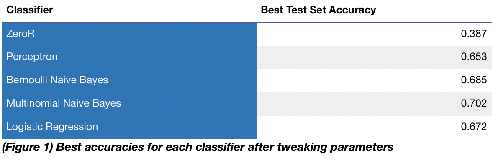
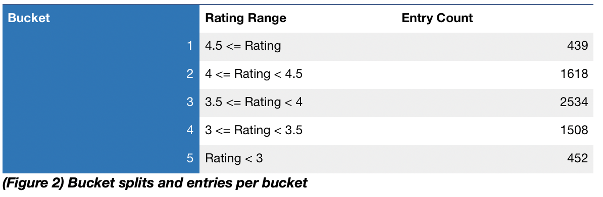
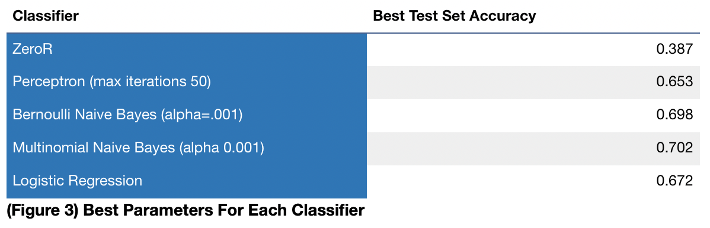

EECS 349 Project
Tristan Litré

Introduction
Bag of Words Classification Using Glassdoor Ranking and Job Listings
Tristan Litré | litre@u.northwestern.edu
EECS 349 Northwestern University
Tools used: python/pandas/sklearn
Abstract
The goal of this project was to find a model that could predict the Glassdoor rating of a company based on information available in the listing. Although Glassdoor ratings are not an entirely reliable source of information, they are an attempt to approximate employee sentiment towards a company. The hope of this project is to point out to potential candidates how employee-friendly companies present themselves in their job listings, and perhaps indicate a similar thing to the recruitment division of these companies. Perhaps most interestingly, this classifier could potentially hint at what sorts of things are more attractive or important to candidates – similar to some of the work done by Textio. Recruitment is a constantly evolving field that needs to change to fit the whims of both the companies and the candidates, this task aims to help both sides keep on top of what’s working and what isn’t.
The dataset used for this project included a variety of information about the job listings, but this project focuses on the text description. Although there may be interesting analysis to be done with other fields, the description was one of the few things that recruiters have a lot of control over. This makes acting on the insights gained from the classifier a more realistic possibility. After preprocessing and testing, the final result was a Multinomial Naive Bayes classier that ran with an accuracy of 70.2% (Figure 1).
Dataset
The initial dataset used came from an online blog post whose author had scraped the data to do some exploratory analysis. This dataset was later supplemented with more entries that I scraped myself. All of the listings are of job listings on Glassdoor for data-related fields.The scraped fields included the company rating, salary range of the listed job, job title, job city and state, the city and state where the company is based, company size, industry, and a vocabulary created from the description. Finding this dataset was a stroke of luck, as I had already begun scraping Glassdoor and found working around the loading limitations of the site to be an extremely time-intensive and tedious process.
The final number of entries once those with missing fields were pruned was 6551. Though it would have been nice to keep collecting entries, this was finalized in the interest of time. After the dataset was all cleaned, I decided to do some exploratory analysis of my own using pandas. I first looked through the job titles to try and find some keywords, splitting jobs by seniority (senior, junior, associate, lead, I, II, etc…). I also averaged the salaries in the ranges and did some aggregation relating to that. However, though there were some interesting findings here – such as the fact that a company was much more likely to be ranked lower if they used the “I, II, III, IV” structure – I wasn’t really seeing a way for machine learning techniques to be applied to the data in a useful way. This brought me to the description, which was already sorted into a vocabulary.
Analysis
Though I knew there was a vectorizer in sklearn that could do a lot of the heavy lifting for me, I decided to write my own functions to turn the description into features that could be used by the classifier. Once this was done I made the classes for my classifier. The Glassdoor rating system is out of 5.0, but I realized that it would likely be difficult to get meaningful results if I used these as 50 different potential classes. Instead, I created 5 buckets that tried to cover the meaningful splits as well as possible.
I then started testing different classifiers using sklearn. I reserved a third of the data to test the model and trained on the rest. This left me with a training size of 4389 and a test size of 2162. I started with ZeroR as a baseline, which gave an expectedly bad result considering the split of the data. I then moved on to a Perceptron, which did much better, with a 65% accuracy once I set the maximum iterations to 50.
After I could no longer increase its accuracy, I moved on to Naive Bayes. For both Naive Bayes classifiers I mostly messed with the alpha values, since it appeared to have the most noticeable effect. The Multinomial Naive Bayes classifier ended up beating out the Bernoulli classifier just barely, but for the most part they seemed to work fairly interchangeably.
Finally, I moved on to Logistic Regression. I had anticipated Logistic Regression being more accurate than Naive Bayes. After all, I imagined that some of the words in the vocabulary would perhaps break the assumption of independence if they were only used together. However, Logistic Regression proved to be noticeably less accurate no matter what I did, with a 3% difference compared to the Naive Bayes classifiers.
I also tested a number of other classifiers, such as RandomForest, but they all underperformed drastically as they weren’t really fit to classify this kind of data. I decided to omit these from the report for clarity.
Conclusion
This project aimed to create a classifier that worked to predict ratings and I would say that it achieved that goal to some degree. Though a 70% accuracy is far from definitive, or even particularly good, it still shows some degree of success in predicting the desired outcome. In the future, it would be beneficial to this project to continue scraping more data. I also believe that the data entry role listing could be expanded to include more types of data. I would be curious to see what kind of impact that might have. Overall, it was an extremely interesting learning experience to build my own featurizer and work with these classifiers.